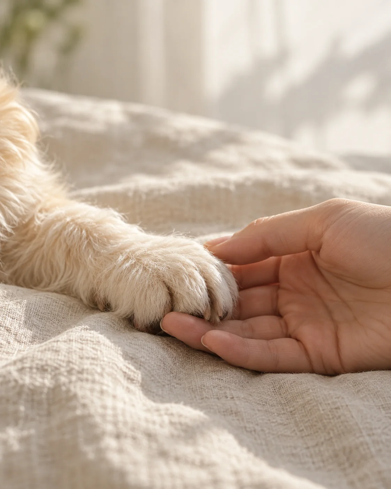
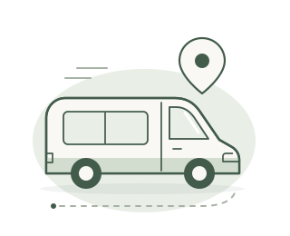
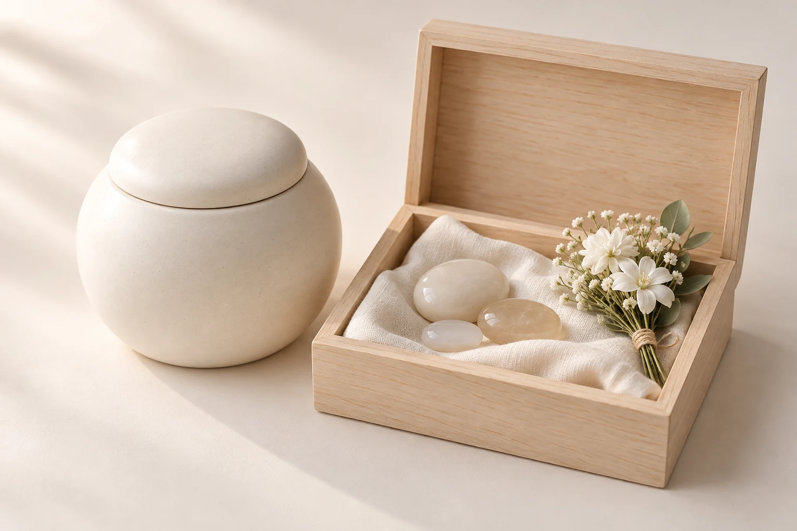
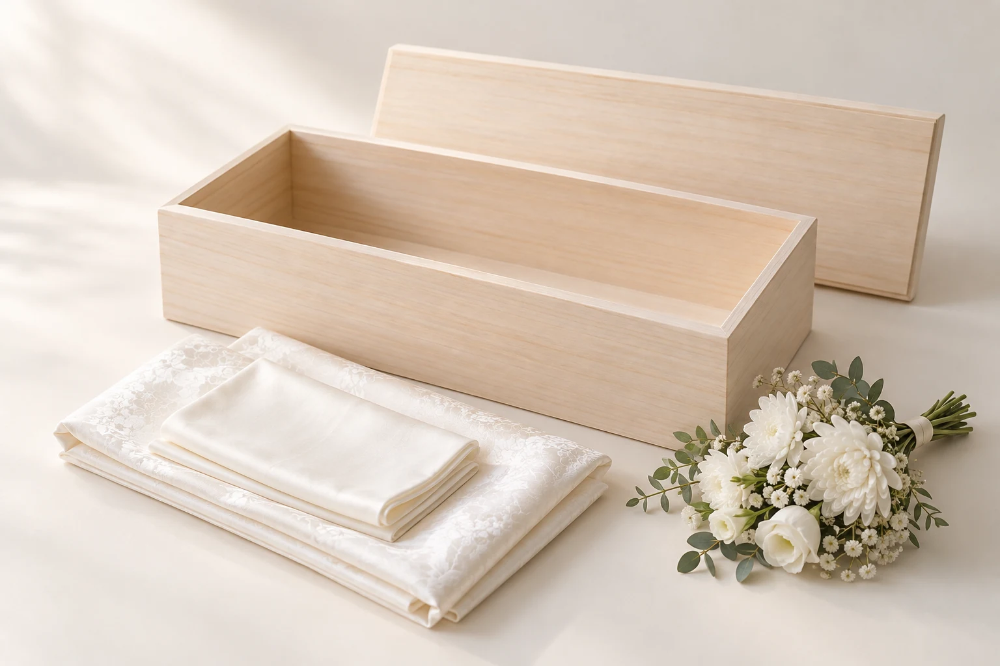
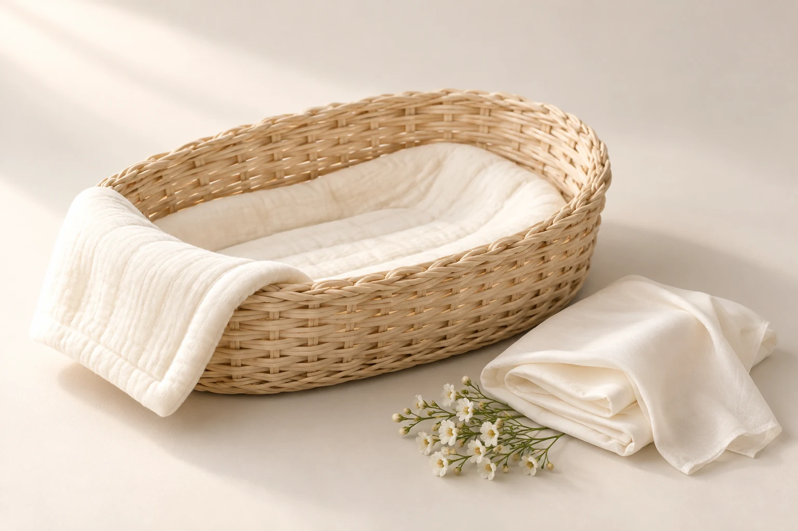
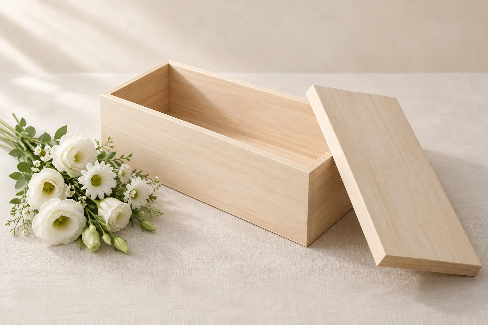
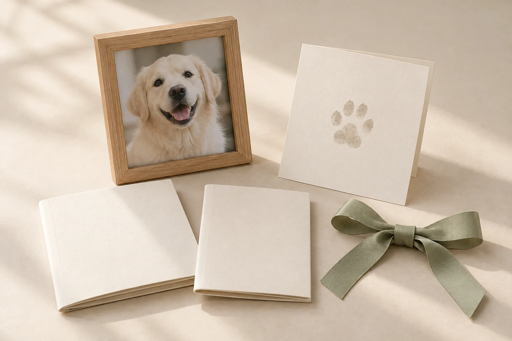
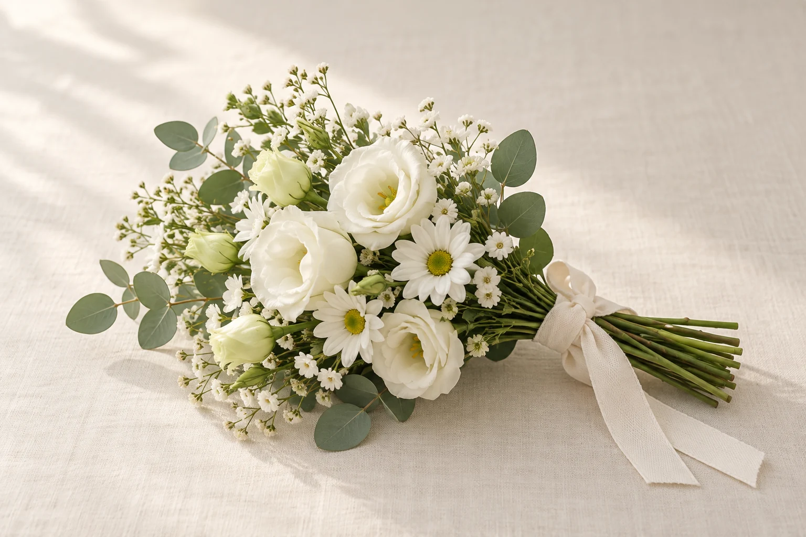
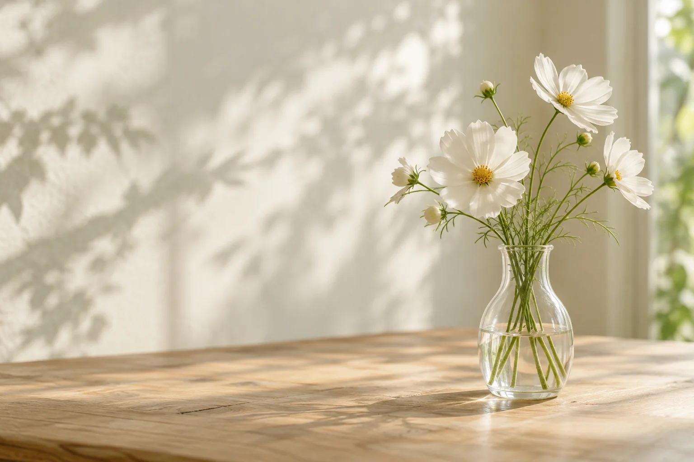

01 — THE DAYS WITH YOU
함께라서 빛나던
모든 날.
평범한 순간들이 오래도록
소중한 기억이 됩니다.
함께한 날들, 마지막 인사, 메모리얼스톤, 그리고 일상 속 추모로 이어지는 네 장면의 이야기입니다.
01 — THE DAYS WITH YOU
평범한 순간들이 오래도록
소중한 기억이 됩니다.
02 — A GENTLE FAREWELL
서두르지 않고
마음을 전할 수 있도록.
03 — A MEMORY TO HOLD
화장 후의 유골을 메모리얼스톤으로
간직하는 추모 방식.

온유 이동식 반려동물 장례
곁을 지켜 준 가족에게 전하는 마지막 인사.
방문과 작별의 시간부터 지정 장소에서의 차량 개별 화장까지,
이용 지역과 일정에 맞춰 차분히 안내합니다.
방문 장소와 화장 진행 장소를 구분해 미리 안내합니다.
장례 구성과 체중, 이동 조건을 확인해 총비용을 안내합니다.
마음이 놓이도록 궁금한 점을 하나씩 함께 살펴봅니다.
이동식 장례 이용 안내
상담부터 인도까지, 네 단계로 살펴보세요.
지역과 일정을 먼저 확인합니다
반려동물의 종류·체중, 희망 지역과 일정을 알려 주세요. 이용 가능한 권역과 진행 장소, 장례 구성과 총비용을 안내합니다.
가족만의 인사를 준비합니다
약속한 방문 장소에서 준비 내용을 확인합니다. 염습과 가족별 작별시간을 거쳐 다음 절차로 이어집니다.

안내된 지정 장소에서 진행합니다
화장 차량은 상담에서 안내한 지정 장소에서 운영합니다. 화장을 마친 뒤 유골 수습과 분골을 진행합니다.

함께한 기억을 이어갑니다
유골함과 보관 안내를 전해 드립니다. 메모리얼스톤을 선택하신 경우 제작 범위와 인도 일정을 함께 안내합니다.
01 / 04 · 지역·일정 상담
방문 장소와 화장 장소는 구분됩니다. 이용 권역과 지정 장소는 상담에서 안내합니다.
온유 장례 서비스
기본 장례부터 메모리얼스톤까지.
함께하는 서비스와 비용을 한눈에 살펴보세요.
BASIC SERVICE
마지막 인사에 필요한 절차를 차분하게 준비합니다.
210,000원
기본 장례 상담
WARM FAREWELL385,000원
따뜻한 나무의 품에, 마지막 마음을 담아.
기본 장례 + 오동나무관 · 인견 수의 · 꽃다발

GENTLE REST420,000원
포근한 요람에, 편안한 쉼을 준비합니다.
기본 장례 + 요람관 · 목화솜 이불 · 꽃다발

FOR YOUR CAT385,000원
가족의 곁을 채워 준 작은 온기를 기억하며.
기본 장례 + 관 · 꽃다발
980,000원
작별의 순간에서, 일상 속 추모까지.
기본 장례 + 오동나무관 · 메모리얼스톤 · 원목함
스톤 제작 범위·기간·인도 방법은 상담에서 확인해 주세요.
SMALL COMPANION
작은 가족에게도 같은 마음으로 마지막 인사를 전합니다.
175,000원
소동물 기본 장례 상담280,000원
함께한 마음의 크기만큼, 정성스러운 인사.
소동물 기본 장례 + 오동나무관 · 면 수의보 · 꽃다발
1kg을 초과하는 소동물은 일반 장례 요금을 적용합니다. 반려동물의 종류와 체중을 상담 시 알려 주세요.
구성 이해를 돕기 위한 연출 이미지입니다. 실제 용품의 형태와 꽃 구성은 상담 시 안내합니다.
EVERY FAREWELL
처음 준비하는 순간부터 유골을 전해 드릴 때까지 함께합니다.
아이의 몸을 정돈하고, 가족이 마지막 인사를 나눌 수 있도록 준비합니다.
약속한 방문 장소에서 함께한 시간을 돌아보고 마음을 전합니다.
지정 장소에서 차량 개별 화장 후 유골 수습·분골을 거쳐 유골함으로 전합니다.

MEMORIES TO KEEP
모든 장례에 기억키트가 포함됩니다.
기억하고 싶은 순간과 장례 후 필요한 안내를 한데 담습니다.
ADDITIONAL OPTIONS
체중과 체형, 이동 조건을 확인해 총비용을 안내합니다.

WITH FLOWERS
마지막 인사의 자리에 꽃을 더하고 싶을 때.
꽃 종류와 구성은 계절에 따라 달라질 수 있습니다.
35,000원정확한 체중 적용 금액은 상담에서 확인해 주세요. 대형 반려동물은 차량 수용 가능 여부를 함께 확인합니다.
ALWAYS CLOSE TO YOU
가족에게 편안한 방법으로 아이를 기억하세요.
기본 장례에 유골함과 보관안내가 포함됩니다. 집에서 간직할 때 궁금한 관리 방법도 함께 문의해 주세요.
화장 후 유골을 스톤으로 제작해 간직하는 방법입니다. 제작 범위와 기간, 인도 방법은 상담에서 안내합니다.
스톤 제작 문의하기어떤 구성을 선택해야 할지 고민되시나요?
아이의 체중과 희망 지역을 알려 주시면, 필요한 구성과 총비용을 함께 살펴드립니다.
함께한 마음은 오래도록
익숙했던 발소리, 곁을 내어주던 따뜻함.
함께한 순간은 저마다의 방식으로 마음에 남습니다.
기억을 꺼내는 속도도, 그리워하는 방식도 괜찮습니다.
자주 묻는 질문
검색한 내용에 맞는 질문이 없습니다.
다른 검색어를 입력하거나 전체 질문을 확인해 주세요.
온유 장례 상담
일정과 비용이 궁금하거나 무엇부터 준비해야 할지 막막할 때,
온유에 문의해 주세요.